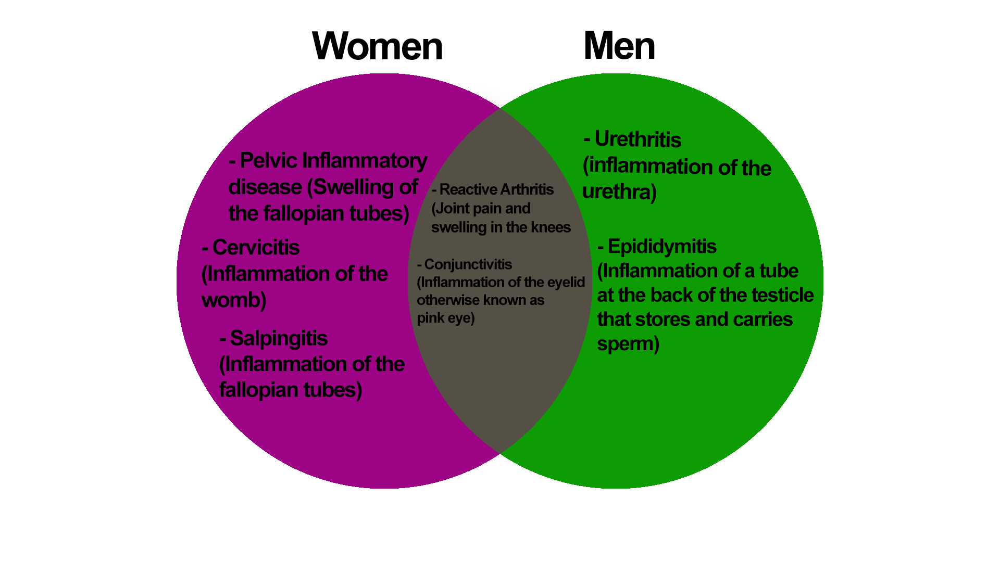

Chlamydia is one of the most common sexually transmitted diseases. Chlamydia is a bacterial infection that’s easily cured with antibiotic medicine. It’s one of the most common STDs, and most people who have chlamydia do not show any symptoms. Chlamydia is a especially common bacterial infection that you can get from sexual contact with another person. Close to 3 million Americans get it every year, most commonly among 14-24-year-olds.
The symptoms for Chlamydia do not commonly show until 5 to 10 days after contracting the infection. The symptoms vary from men to women.
Chlamydia can be easily cured with antibiotics. It is best to go to your everyday clinic or to a STDs nearby checkup to have a diagnosis or test on whether or not you have Chlamydia. If so, there are treatments that will help you get through Chlamydia. It is best to refrain from doing any sexual activity or intercourse for 7 days after a single does of antibiotics.
Medication will stop the infection, it may not repair any permanent damages done by the disease. It is best to understand the fatalness of Chlamydia, so that when you do receive Chlamydia, you will know how to treat yourself and prevent Chlamydia from happening.
Getting a diagnosis may include a physical exam and a swab sample from the penis, cervix, urethra, throat, or rectum/urine sample.
Getting a chlamydia screening can be done at home and at the clinic. A swab in the lower vagina and a urine sample, which is then sent to a laboratory. The results should come back in 3 or more days. It is best to personally go to the clinic, so that the results will be there when you need it.
Women who have untreated chlamydia will be at risk of PID (Pelvic Inflammatory Disease) and can cause a eye and lung infection to a pregnant women’s newborn. PID can lead to not being able to get pregnant, chronic pelvic pain, and tubal pregnancies.
